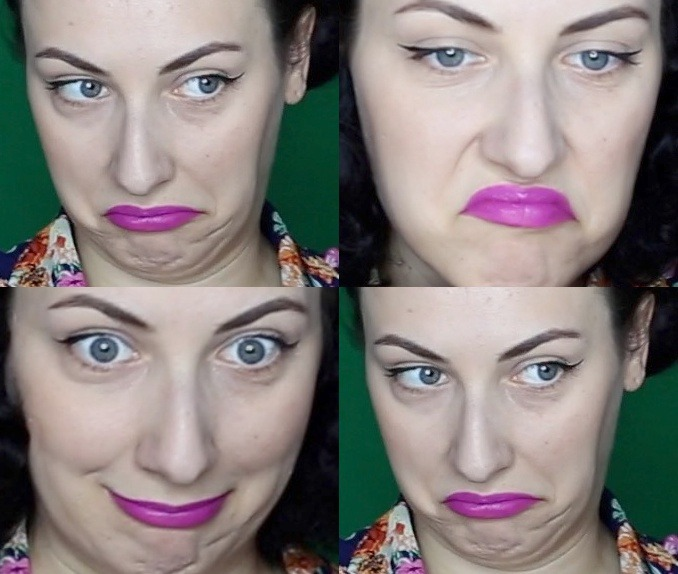

Being unfairly fired from my dream job
11th Mar 2020
Sometimes we imagine how we will react in the most awful scenarios: the death of a loved one, breaking up with the love of your life or being fired from your job.
The truth is, you can’t predict how you are going to react in a nasty situation. Reality is usually either much worse, or much better than we can picture it in our heads.
For a long time, I kept thinking: how will I actually react when my terminally ill aunt will pass away? When she died a few months ago, I still felt shock. And sadness. But I had to take things as they were and still function as a normal human being. If you are able to handle death, you will be able to handle pretty much anything else.
Today I don’t want to talk about death. I just want to talk about how it feels to be fired, when you are someone who would never imagine anyone possibly having any reason to fire you.
The point of this post is not to play the blame game, or the shoulda/coulda/ woulda game.
So, let’s go back to the “Nobody fires ME!”/ “Nobody will ever fire me” mentality. It is quite similar with “Nobody dumps ME/Nobody will ever dump me, I will dump them”, isn’t it? Whilst these affirmations are a soothing thought for your ego, the truth is, you don’t have control over the situation. You control your actions at work, your feelings, and how productive you are in certain situations. In life and in work, things don’t go as planned and things don’t always work in your favour. Shit happens, and you just have to deal with it. Sometimes there is nothing you could have done differently - because for some people, everything will never be enough.
How does it feel to be fired?
I used to imagine how awful it must be to be fired. I saw it in movies, overheard stories about fired people and I thought to myself that you can only be fired if you suck at what you do and you are bringing down the company or if they have to cut down on staff and your position is not crucial to the company. I always thought that it will be very difficult for me psychologically to handle being fired, especially because I am a hard worker and I give my all at work. So how could I possibly get into a situation that would get me fired?

I received the news through a text message. Yes, I was shocked and a bit sad. Yes, it did hurt my feelings and my ego, considering I did have the “Nobody fires ME” mentality. But you know what I did not have? Regrets. I know I did my best and I also desperately tried to adapt to a world that was rejecting me like a failed kidney transplant.
But you know what? It’s ok. Not every relationship works, and not every workplace or job is suitable for me. I am not a perfect human being, and for sure I am not a robot - but I am, and will always be human. And failure is a big part of being human, and a big part of learning and improving yourself.
I still leave this nasty situation a winner. I learnt a lot of new things, improved my technical skills, met great people, made a few good memories. My life and ethical principles came to the surface stronger than ever and I realised that one big issue with me being in the environment that I was in is the fact that my life and ethical principles were clashing with the medium, not merging.
Just like water and oil don’t mix, you will not mix well with any medium. That’s ok! Being fired is not always a tragedy, or the end of the world. It’s a new beginning - both for the employer, and for you.
As it’s been a few months since the firing happened, I am ready to share with the world the fact that I used my last pay from the job I was fired from to make the video below. It wasn’t a large sum of money, just small bills. This experience was cathartic and fun, I definitely recommend it if you ever get fired!